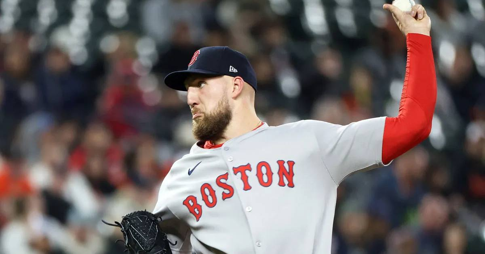

Red Sox want a frontline starter behind Crochet — and nothing less
Craig Breslow drew a hard line at the GM Meetings: Boston will only add a starter who can pitch at the front of a rotation and start a playoff game next to Garrett Crochet — no No. 4 or No. 5 arms.

Disclosure: this post contains affiliate links. I earn a commission on qualifying purchases.
The line Breslow drew
The Red Sox are shopping for starting pitching this winter, but only at the very top of the market. Chief baseball officer Craig Breslow said at the GM Meetings in Las Vegas that Boston will only add a starter who can pitch at the front of a rotation and start a playoff game alongside Garrett Crochet.
"Starting pitching," Breslow said. "And particularly someone we feel can start alongside or slot in behind Garrett and start a playoff game for us. Because of the depth that we've built up over the last couple of years, we feel pretty good about overall starting pitching and Nos. 3-ish through 10-ish, and that's not to take away from guys who are certainly capable of doing more. It's just to say, I don't think we're going to spend a ton of time trying to add a No. 4 or a No. 5 starter. If we're going to make a starting pitching addition, I think it should be somebody who can pitch at the front of a rotation and start a playoff game for us."
That is a deliberately narrow target. Breslow is not looking for depth — he is looking for a second ace.
Why the gap exists
Crochet, acquired from the White Sox last offseason, is the foundational piece of the rotation — a true No. 1 who could front the staff for six more years. Behind him, the picture gets murkier. Brayan Bello is the nominal No. 2 on paper, but he profiles more as a solid mid-rotation arm than a front-of-the-rotation force, and the rest of the group is depth rather than difference-makers.
That is exactly the gap Breslow is describing. The organization feels good about its quantity of arms. What it lacks is a second pitcher opponents have to game-plan around in October.
Who is actually available
Breslow has already been down this road. At last July's trade deadline, he was in discussions with teams about top starters — most notably Minnesota's Joe Ryan — and nothing came to fruition. The offseason, with more time for a deal to come together, gives him a second chance at the same names. Ryan remains a player to keep an eye on.
The other trade question is whether Detroit would ever move Tarik Skubal. A Crochet-Skubal pairing would give Boston the best 1-2 punch in the game, but prying him loose would take a haul — and Breslow acknowledged the tension there, noting the club is mindful of keeping one eye on the future even while it believes it is in a window to contend. Trading four young players for a starting pitcher, as Boston did for Crochet, is one way of pulling those wins forward, but it is not a move you make lightly twice.
On the free-agent market, the established names are Dylan Cease, Framber Valdez, Ranger Suárez and Zac Gallen. Boston also made its intentions clear by not extending a qualifying offer to Lucas Giolito, who now looks likely to wind up elsewhere — a No. 4 or No. 5 profile is precisely what Breslow said he is not shopping for.
"We'll see what the trade and free agent markets dictate," Breslow said. "There are compelling opportunities in both, we think."
The other hole: a middle-of-the-order bat
Pitching is only half the winter. The Red Sox still need to fill the power void left by Rafael Devers, traded to the Giants in June, and a centerpiece run producer is on Breslow's wish list alongside the starter.
The expected return to health of Roman Anthony and Wilyer Abreu will help, but neither replaces what Devers brought to the middle of the order. Breslow's point is about more than home runs — a bat in the middle of the lineup forces the other team to game-plan around it, with a compounding effect on everyone else in the order. The data backs up the October angle: power really plays in the postseason.
At the same time, Breslow pushed back on the idea that the fix is only about slugging. "I don't want to get so anchored to this idea that the only way to score runs is home runs," he said — a reminder that the bat they add needs to be a complete hitter, not just a power number.
Two needs, one standard: whatever Boston adds this winter has to be good enough to start a playoff game or change a playoff lineup. Anything less is not worth the time.
Sources
• MLB.com Red Sox Beat / Winter Meetings primer
Gear up: Fanatics